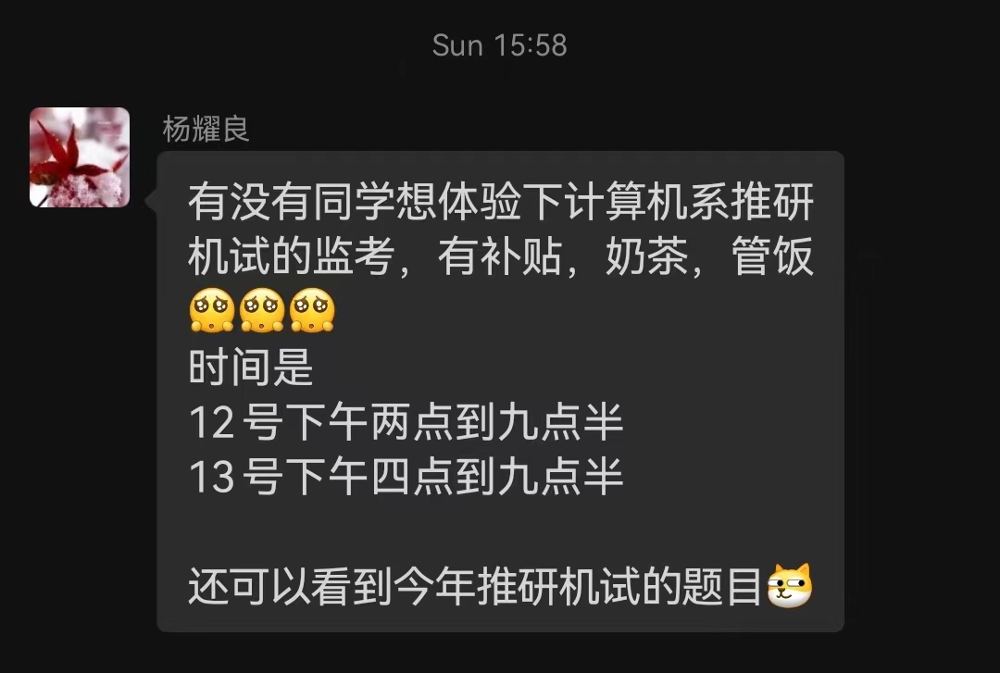
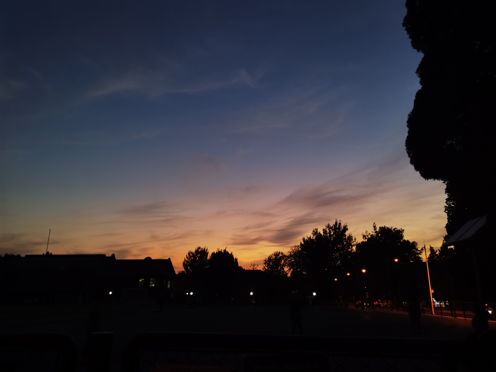
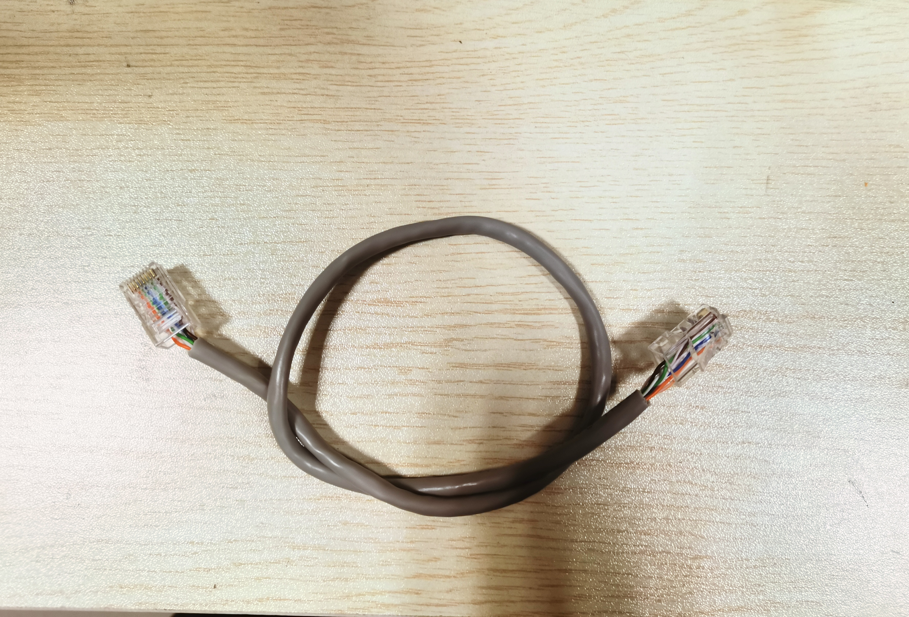

华子第五学期·September
9.14
上午 10:28
- 一开学就莫名的变得异常忙碌。不断周旋于各式各样的任务当中。本以为能用来独立思考的时间完全被课程作业所挤占。嗯，这些作业，能看懂，但也不会做。约了后天和宋神的聊天，需要在明天整理一下问题和自己的现状，希望这次交流能给我未来指一条明路吧。我还是没有改掉我贪的习惯，想要的太多，能做的太少。最近还要看看 landscape 能不能加友链，不行就换个主题吧。
- 昨天的机试监考

- 本来抱着能白嫖机试题目的想法去的，甚至把信号和人神的第一节课都翘掉了。Well，被分到线上监考，啥也看不到。好吧，我的 connection 不太行。也算涨一次教训，不过昨天晚上的饭和奶茶还蛮香的，监考的技术领队也很 nice。就是我投入到里边的时间成本有点多。对这个监考，不想做态度上评价，只是事实呈现，写在这里是为了让后来之人能够权衡使用。
- 每天给自己设 TODO List 的效果还不错。短期的回报和激励让我更有动力继续做下去。但是我非常担心短期内做的事情从长期来看并不是有效的。Anyway，信息爆炸，检索能力再强，也比不上 Social 能力。毕竟一个人的精力终究是有限的。
9.15
中午13:40
- 昨天去体验了一下贵系男篮的训练。总的来说这个训练是一种借鉴了部队关于团队建设的思想，也就是所有荣誉和惩罚都是团队一起承担。但是对于我这种坚决反对这种形式的集体主义的人，并不会对我产生很大影响。那里的每个人都很认真，从训练时间和训练过程中都是如此，上次我感受到如此强的认真还是在千帆的训练营。说实话，千帆的经历是奠定我现在篮球水平的基础。
- 贵系的这种方式肯定能作出不错的成效，但是很大概率不达到顶级的成果。从原理上来说，篮球是一项进攻大于防守的运动，他们只专注于防守，确实能做到在比赛上万无一失，但是没有对进攻的关注，就没有赢球的可能。这就和王者荣耀只关注于抢人头而不关注与推塔一样。这一点是我最不认同的地方。
- 上午去听力刘晗的主权与人权，很认可他分析问题的思路。从社会热点入手，通过经典书籍认识到问题的根基，才有全面分析社会问题的能力。这个课的思路和中哲似乎差不多，真的非常喜欢。但是这学期的课实在是压力太大了，但是它们才只有仅仅不到20学分。但是我这学期一大半将会投入到 G 的准备当中，所以实际工作量似乎也不算小。就是可惜了刷分的大好机会了。
9.16
下午 15:00
- 今天中午和宋神聊完之后，结果是，感觉和之前自己给自己规划的情况差不太多。总的来说就仍然是科研和学习这两育并举。唯一的不同是，否定了我等 SRT 的想法，并且告诉我要及时止损。那么基于此，我这边要做的事情大概是重新排一下优先级。大概是科研 课内 > 出国 >> Others。我太贪了，又想出国，又不想放弃本校保研。但是随着我了解研究生的生活越来越多，我似乎对在本校继续读下去的兴趣越来越小。
- 看了赵总的 blog，我远远没有他那样优秀的成绩和背景能一边得到着中介的帮助，一边拿着那边的奖学金，但是这似乎并不是一个非常严重的差距。我现在在这上边的主要阻力就是自己，我没有他那样 social 的能力，其实我身边可以获取帮助的人还是蛮多的。希望十一的时候能有机会把这些事情再复盘一下吧。
- 祝我自己明天六级加油，虽然只是把这个当做考 G 的 warm up 了。昨天和 zr 打赌，我 G 要是能考到 330，就能白嫖他 5 顿必胜客。这种好事我当然答应了，毕竟努力学习还能够赚到的买卖现在可不多了嘿嘿嘿。
晚上23:21
- 没想到在第一周的最后一天充满着惊喜和挑战。先是傍晚的贵系男篮练到反胃，已经是第二次训练了，不能再被解释为身体不适应了。其实我身上个人主义色彩还是蛮浓重的，所以在篮球这项运动当中，实际上进攻给我带来的吸引力远远大于防守。我甚至觉得贵系的配置似乎并不是很好，如果让五个我在场上，并且有对应位置的身高的话，完全是可以完成碾压的。
- 训练完之后随便去蹭了一下沟通表达进阶。看着排在队列190+的我，抱着试一试的心态去手选。没想到刚到，就有自我介绍环节的提问，看了看四周无人应答，我直接暴起。现在想想还是不明白当时为什么会那么做。其实我心底里还挺社恐的。说完之后就浑身冒汗，角质挖地了。就是因为这件事，有幸拿到了手选名额。
9.18
上午9:42
- 终于把 butterfly 差不多再次配好了，一些 link 也已经做好了。
- 上午来听这个勤工的大队会是真的谢。昨天晚上群里就在风风火火地说今天要签到，一定要来。结果，等到整个会结束，负责签到的队长都没有出现。讲的人还在台上设问，“你知道我们的时薪为什么定到 26 块钱吗？因为北京的最低时薪是 25块8”。我真的会谢，我难道应该感谢你给我在最低时薪的基础上多加了两毛钱？不过这种事情，当做笑话看还蛮有意思的。引用 Stella 的一句话“每天看看这些 Weired Guy 的朋友圈是精神愉悦的一种途径"。说起来上周五认识的 B_CICI 好像是 Stella 的年轻版。我现在对自己的认识逐渐清晰，我的社牛很大程度上是条件性的，比如当我必须要求为自己的未来考虑的时候；或者是我超级兴奋的时候。但是 B_CICI 并不是，一上来就是压倒性的社牛。这和 Stella 当时和我聊天的情况差不太多，有点害怕海后第二。
- 昨天和 Lemon 问 RL 方向的事情，他的建议是不用特别着急去接触老板，因为老板没啥时间管你，而且名额该是你的就是你的，不是你的就不是你的，即使脸熟也没用。说实话当时听到这个还蛮震惊的，因为前一天宋神还和我讲要加快进度。两边说法不一样让我不知道该咋办了。。。
中午13:46
- 胆战心惊。从昨天和 Lemon 聊天开始，焦虑又萦绕到我的心头。不止于 Lemon 的科研和学业的压力，我现所面临的还有标化成绩的压力。和 Lemon 的聊天让我意识到，现在接触实验室已经不是晚了，而是特别特别晚。不过好在老天给我机会，现在来看，补救似乎也还来得及。不过，昨天和 Lambda 聊天的时候，发现他科研前景也没有那么明朗，同是天涯沦落人。但是 Lambda 无论在能力还是学业上都比我强太多太多了。
9.19
下午 16:44
- 虽然现在事情还没有着落，但是我还是很感谢昨天帮我的 SD_le。本来我是过去作为一个工程师打工仔的。但是听到我有在纠结润和华子保研的时候，SD_le 给了我很多真诚的建议。如果在 KEG 做工程师相关的工作，很难在可见的未来出 pub，但是能够给老板留下好的印象。而如果是想要能有 pub，就必须要自己动手做一些周期短的项目，但是坏处是有可能什么成果都出不来。听到这里，我果断倾向于后者，就是要麻烦 SD_le 帮我去问一问了。现在看还没有什么消息，我在想如果不行的话，我要不还是在 KEG 这边做打工仔吧。毕竟他们要做的是去爬一些图片，感觉还挺好玩的，而且后期的一些 finetune 的工作说不定也能作出一些成果。但是他们的数据爬取工作会要持续将近两个月，这个时间对我来说有点太长了。
- 昨天和赵总聊天的时候，有问到他现在的工作模式，“mentor 让看 paper，看完之后讨论 paper 是否可行，可行的话就去实现”。这种工作模式也是我理想中的工作模式，但是赵总的现状对我来说是不可复制，而且时间上也是不允许复制的。他说十月份 RL 的组可能会有 hc，如果我到时候还基本能 arrange 过来的话，真的想去试一试。但是这个机遇是可遇不可求的，我并没有必要因此过度准备 RL。
- 总结来看，我这边的信息目前都指向 梢头客 和 Acron。我觉得我有必要在接下来的一周里和他们进行更深的接触。
- 好的，今天剩下的时间是属于 HCI 的。。。两个纪录片和一个文章是真的难顶。
9.21
上午 10:55
-
今天是周三，但是这个周三有一点过度忙碌了。学生节的排练，贵系的训练，体育部的推送培训将占满剩下的今天。
-
昨天和 zwd 做项目交接的时候，和之前和 lcy 对接的时候感觉很不一样。虽然他们同样是非常耐心地向我讲解项目的整体架构，但是我觉得 zwd 的需求更加明确，而且实现性更强。这次我主动问了很多实现的技术细节，得到了积极的回应。上一段 lcy 的经历让我对科研产生了一定的阴影。希望这次能走出来。接下来的日子里，我要读很多很多 paper，会考虑再开一个 blog 记录我的学习过程。总之，刚到的新人总应该努力一点。
-
修改了一处 typo，昨天才发现给 lambda 的 link 出了一点问题。那个域名竟然是要用 http 请求而不是 https。唉，不过谁回去窃取博客上的东西呢不是吗。
-
才发现计网安是三小节的课，那我只能翘掉最后一节去和小朋友将推送的事情了。我觉得我有必要找 lambda 问一下这个课的学习攻略以及找别人要课程回放。。。
9.22
上午 10:36
- 竟然发现自己有一个没课的周四。但是最近感觉有点乱了。可能是因为学生节的缘故，每天有排练，所以搞的时间很紧张。但是我觉得真正的原因还是我不太会规划。昨天才发现自己的计组实验报告少了代码分析的部分，慌慌张张补上，给助教发邮件。我觉得这是一次对我的警醒，虽然之前宋神和我说即使你每周都花很多时间在科研上边，你仍然能够写完作业。但是注意，你的质量可能会下降。这次也许对我来说是一次警钟吧。
9.23
晚上 19:49
我想一只卑微的蚂蚁，蜷缩在无人知道的角落里，啃着手里所剩无几的干粮，无助地望着这个世界。
- 坐在所谓的“半岛”上，上周的境遇和现在的境遇是迥然不同的。今天经历了怀才不遇的韩信境地。虽然我明白，我的能力和他们的需求并不匹配，但是无球可打真的很令人伤心。去训练不是仅仅为了跑那几个无聊的快攻，更不是为了那些已经深入骨髓的热身，怎么说每个人多多少少都有一点上场的想法。我理解你为了备战马杯要训练主力，但是让一些人无球可打真的合理嘛？至少我不认同。虽然 hmm 和我说过他有为了集体利益牺牲自己上场机会的想法，但是我始终无法理解。
9.24
傍晚 17:09
我感到焦虑，但是也得到了解脱。
- 不知道为什么，每次去上慧凝的沟通表达基础与进阶，就会有一段莫名兴奋的时间。在课上远远地看到 skywalker 也在，就想着下课的时候过去打个招呼，没想到旁边是她 npy ，有点尴尬，我瞬间脚趾扣地，灰溜溜地走了。和助教解释完雨课堂的 bug 之后，我想着和慧凝聊一聊自己之前在情感方面面临的一些困境似乎是一个很好的选择，于是我就和慧凝说了我在和 Stella 接触时候的而一些困境，我当时完全不知道该怎么处理，所以我问她在那种场景下应该怎么表现。可是我得到的回答却是，“你太想要一个答案了，在情感问题里边很多时候要因地制宜，没有一个固定的答案。而想要答案的心情会让你变得特别很着急。”她这一段话戳中我的点在于，她点出了我很着急的性格。但是之后我发现她有意在将话题引向一些别的方向，似乎想通过对我的一些细节进行夸奖来结束这个话题。在感受到这一点之后我有点害怕，我害怕她刚刚说的那些话只是在安抚我的情绪，而不是她对我的真实看法。因为之前在和机构接触的时候，这种看人下菜碟的手段见的太多了。虽然慧凝是我的老师，她肯定不会这样做，但是这种阴影却时时刻刻萦绕在我的心头。
- 因为 skywalker 这个事情，我晚上又去找 zyh。这个逼，只能说很有东西，也很好玩。我和他的共性在于我们都会试图去搞笑，但是他搞笑的方式，也即说骚话的方式是我所不能学会的。感觉在很多方面，他都比我强太多太多。比如 3.93 的成绩，比如成功的情感，再比如他所在的社团、圈子。其实在能力方面，我和他相差的不是特别多，但是在自信和个人气质上我只能望其项背。“你要想搞好，就要投入，不能每天在这空想，那样永远得不到。”他和我说，这的的确确戳到我了。回想一下，上大学以来，我似乎还没有学会过一样全新的技能，即使是我比较喜欢的 guitar，技术甚至都没有进步半分。我把太多的时间投入到体育上边了，但是这并不是一个值得投入很多的方向。在紫操的时候遇到了熊哥，虽然我之前完全不认识，但是熊哥本人很 talktive 的，加上我认识很多他毕业高中的朋友，所以我们很快就熟起来了。听他讲了很多冬奥时候的事情，从这些真实的例子里边我才真正认识到华子是一座围城。这个围城能在很大程度上庇护我们，同时也限制着我们，更可怕的是，这个围城让外界的人对我们所知甚少，会产生各种各样的误解。这种误解是无法通过言语解决的，只能是身临其境，才能破除华子的神圣光环。熊哥在体育上的建树是异常卓越的，但是现在来看，这方面的建树似乎并没有给他带来太多的好处，反而牵扯了太多的精力。我才真正开始思考是不是要割舍一些东西。
- 就现在而言，我觉得我的主要精力应该放在科研和课程成绩上，但是我并不想让它们成为我生活的全部。上次见赵总的时候他说“我觉得我现在能保持一项写作的爱好已经是极限了。”其实这种方法值得我借鉴，我应当把我有限的业余时间聚集起来，用来专攻。现在我感觉我的精力太过于分散了，这很有可能造成竹篮打水一场空。
- 说起华子，今天和 lambda 还有 wildog 吃饭的时候，比了一下中国科学院大学和华子。我们想了半天，都没找到华子比国科大好的点。甚至，国科大的宿舍和校区旁边的雁栖湖还比华子强好多。。。不懂。。。华子。。。唉。。。
9.26
上午 10:43
- 水逆。今天早上醒来，看到手机上显示着“主权与人权特殊原因选课成功”，我瞬间清醒。这个课是当时不抱希望随便填的申请，没想到现在通过了。但是已经过了退课的时间，下次退就只能记 W 了。于是我火速给注册中心打电话，想着能把这个课搞掉，因为我已经实在无力承受更多了。不得不佩服注册中心的人真的很会踢皮球，说了半天，一口咬定这不是选课系统的 bug 而是 feature。。。看到没有希望，我只能无奈地挂了电话。
伟大的华子是不可能犯错的，错的只有我这样的小小尘民，对吧。

- 其实在这里写下这些东西，也是因为想尽快摆脱掉一些情绪。当我把这段不好的精力变成故事记录下来的时候，那些不好的情绪也会随之而去了。
晚上23:42
- 对今天的评价是没怎么摸鱼。计组 lab2 的难度远远低于我的预期，我本应在人神上更进一步的。虽然今天的人神逻辑没太想明白，编原的环境没配好，不过我觉得我发现了这些问题，也是算是有一定成效，起码我明天知道该怎么去解决这些问题了。
- 但是总的来看时间还是不太够，我不知道要花多久才能搞清楚 diffusion 的 codebase，也不知道自己在复现它上边会有多大阻力。其实对困难的未知相比于一直的困难，可能要更差一点。
9.29
下午16:35
- 这学期的周二感觉是 死亡周二，早八到晚九，一天满满的课。不过在这个星期的周二又学会了一项奇怪的技能。（妈妈再也不用担心我的网线了 x）

- 从科服老人聊天的只言片语中，大概能还原出来，科服本身是一群硬件技术牛人创建的，只是借助于勤工的平台来吸纳更多的人。这比社团能吸纳更多的人，而且因为他们不是以营利为目的，所以受勤工那边的管辖也并不是很妨碍。不过，我想对于我来说，等后绩点时代的大四再在这些奇奇怪怪的方面投入多一点吧。
- 昨天跳水课认识了 李禹辉 和 任自厚。lyh 确实是个社牛。从他的身上我看到了一些我所欠缺的点。对我来说，我只会和我认为很熟的朋友轻松地聊天，而对陌生的人相对冷漠。而 lyh 不管是对于自己认识或者不认识的人，都会像很熟络的朋友一样地聊天。我觉得这个特点算是我发现自己的一个 loss，接下来，如果我想修正的话，就可以基于这个 loss 做 bp 了。(x
- 超级感谢 lmd 今天捞我，从我接触神经网络开始，我就一直头疼于训练结果的可视化。在 lmd 的帮助下，我会彻底和这个问题告别。我似乎觉得，我又行了hhh
- 最近有一字班的小朋友来问我答疑坊面试的问题，这也是我第一次觉得被需要，还蛮有成就感的。我曾经问过那些很热心于帮助后来人的学长学姐，他们说是因为他们当时受到了很多来自往届的帮助，所以想把这份帮助传递下去。但是对我来说，我受到的来自学长学姐的帮助并不多，我只能把自己探索踩坑的经验传给后人。
- 下午和宋神聊天的时候，谈到了 心态调整 的问题。我才知道 自我欺骗 其实也在被很多人用。当我们不得不去做一些我们没有那么感兴趣或者根本不在自己职责范围内的事情的时候，要通过心理暗示说服自己很想做这件事情。从而减少焦虑。说实话这种方法陪伴我度过了高三的时光。
本来以为高考是唯一一件需要 all in 的事。但是没想到，上了大学之后，各个方面都需要 all in，而且你还不能太期待投入的结果。因为，你的保研名额很有可能被空降的大佬拿掉。
- 今天通过奖学金申请表看到了自己在贵的排名。虽然不是那么好看，但是已经比去年的我强太多了。很开心能看到自己努力的结果。情况似乎没有我想象的那么坏，我总是觉得自己已经置于死地，但是这种焦虑似乎能不断推动我前进。
- 现在，最大的问题，是，我，根本不会，合理地向别人求助。那，最后，只能去逼自己了。这，一定要改。
9.30
晚上 22:12
- 九月的最后一天了。但是感觉九月过的好快。每每到九月的最后一天，都会想到小时候看过的漫画《偷星九月天》，回想起的不仅仅是充满激情的冒险和动人心弦的情节，还有和朋友一起走在放学路上的那些日子。金黄的银杏叶会铺满我们走着的道路，尽管当时年轻的我们还在抱怨着这些“多余”的叶子遮住了柏油路。在内务部街的那些日子，我没有经历什么轰轰烈烈的事情，所经历的，只不过是平常的时光流逝。感觉我没利用好它，但是，这些日子，将永远无法改变，将永远成为青春的遗憾。
- 今天在想为什么自己突然从大学之后就有写日记的冲动了，可能是因为对时间的流逝更加敏感了。小的时候，总是觉得日子会这样一直重复下去，永远永远。这是因为那是我们活过的时间太少，还没有真切地体会到一件事物在自己生命中的不同。虽然这时候也有长辈会和你说“生老病死”，但是你总会觉得他们像是在吓唬你。直到一个不经意的瞬间，你发现你当时认为会永远持续下去的日子正在离你远去，那些你身边的人有些永远消失在你的世界里的时候，你知道，大人说的话不是假的。这时候，你很怕，很怕失去现在习以为常的生活，所以你开始记录身边的点点滴滴，试图借助日记中的文字，减慢时间流逝的脚步。
- 今天先伤感到这里。因为是九月最后一篇，所以写一点不一样的。
- 今天要填一个奖学金的成绩表格，要把去年所有课的成绩分类，填到对应的表格当中。我犯了迷信技术的错误，花了两个小时，去做 python 解析器，结果做出来，才发现，手动复制粘贴只需要二十分钟。。。
- 九月份的日记太长了，十月打算新开一个。而且这一篇被吐槽太不正经，接下来可能会往里边加一点技术相关吧。
All articles in this blog are licensed under CC BY-NC-SA 4.0 unless stating additionally.
Related Articles